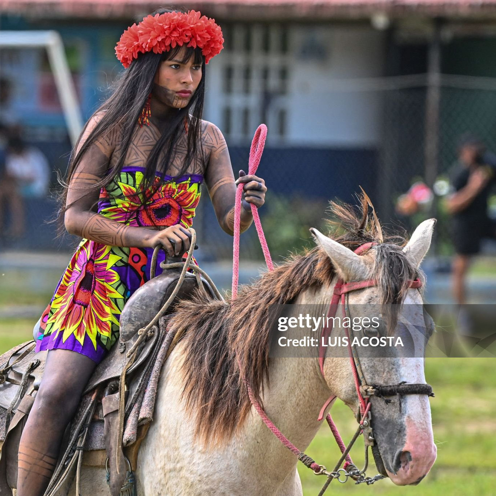

Tours realizados por Nuestra Agencia
Nos comprometemos a brindarte un servicio personalizado y confiable en cada etapa de tu viaje. Desde la planificación hasta la ejecución, nuestro equipo estará contigo para asegurarnos de que cada experiencia sea, segura y memorable. aqui puedes ver algunos tours ya realizados y la valoracion proporsionada por nuestros clientes
Bocas del Toro
- Isla Colón: Comenzamos nuestra travesía en la icónica Isla Colón, donde las aguas cristalinas y las playas de arena blanca invitan a relajarse y disfrutar del sol caribeño.
- Parque Nacional Marino Isla Bastimentos: Exploramos la biodiversidad marina en este santuario natural, hogar de arrecifes de coral, tortugas marinas y coloridos peces tropicales.
- Isla Zapatilla: Navegamos hacia esta isla paradisíaca, ideal para practicar snorkel y admirar la belleza submarina de Bocas del Toro.
Valoración del Tour
JUAYUA
Explora las ruinas de una civilización antigua y descubre su fascinante historia. Guías expertos te acompañarán en este viaje.
- Ruta de las Flores: Comenzamos nuestra aventura recorriendo la pintoresca Ruta de las Flores, un camino lleno de coloridas flores, paisajes montañosos y encantadores pueblos coloniales.
- Cascadas y Pozas Naturales: Descubrimos la belleza natural de Juayúa al visitar sus cascadas y pozas cristalinas, perfectas para refrescarse y conectarse con la naturaleza.
- Mercado Gastronómico: Nos sumergimos en el bullicioso mercado local, donde los aromas de comida típica salvadoreña nos invitan a probar deliciosos platillos como pupusas, yuca frita y horchata.
Valoración del Tour
La Fortuna

Explora las ruinas de una civilización antigua y descubre su fascinante historia. Guías expertos te acompañarán en este viaje.
- Puentes Colgantes: Nos aventuramos en puentes colgantes que atraviesan el dosel forestal, ofreciendo vistas panorámicas de la flora y fauna que habita en esta región.
- Cataratas y Aguas Termales: Disfrutamos de la frescura de las cascadas y pozas naturales, donde el agua cristalina invita a nadar y relajarse en medio de la selva tropical.
- Volcán Arenal: Nos maravillamos con las vistas del majestuoso Volcán Arenal, un ícono natural de Costa Rica, mientras caminábamos por senderos que revelan su historia geológica y exuberante vegetación.
Valoración del Tour
San Pedro Sula

- Catedral de San Pedro Apóstol: Comenzamos nuestra travesía en esta majestuosa catedral, testigo de siglos de historia y una arquitectura impresionante que deja sin aliento.
- Museo de Antropología e Historia: Sumérgete en el pasado de la región a través de artefactos y exhibiciones que narran la historia de San Pedro Sula y sus habitantes.
- Parque Nacional Cusuco: Nos aventuramos en la naturaleza virgen de Honduras, explorando senderos rodeados de exuberante vegetación y cautivadoras vistas panorámicas.